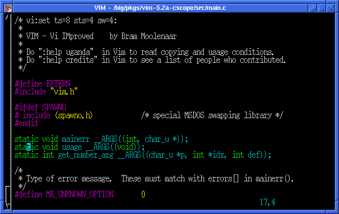
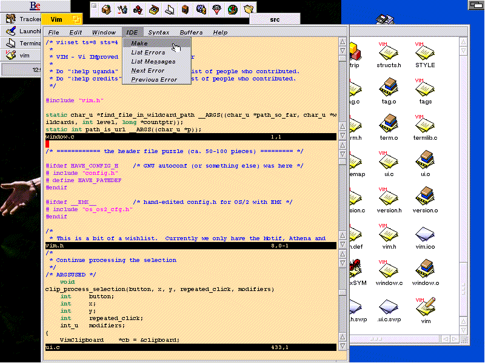
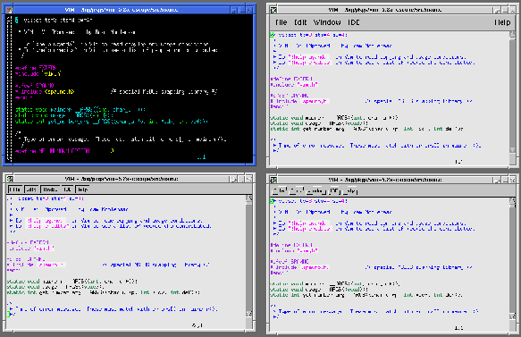
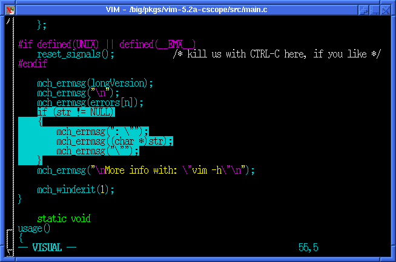
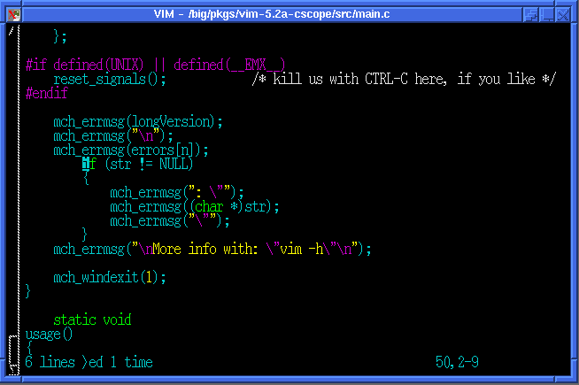
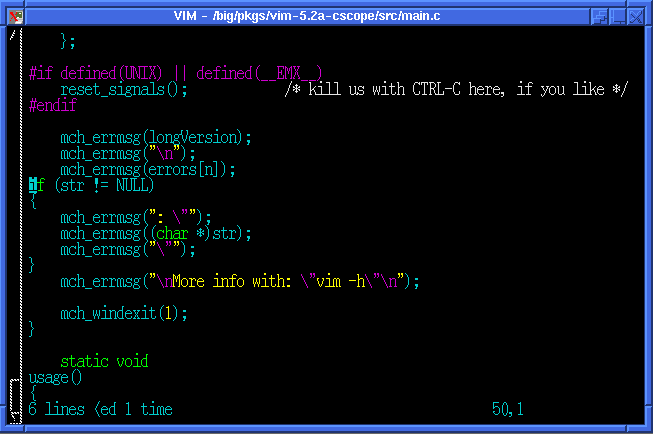
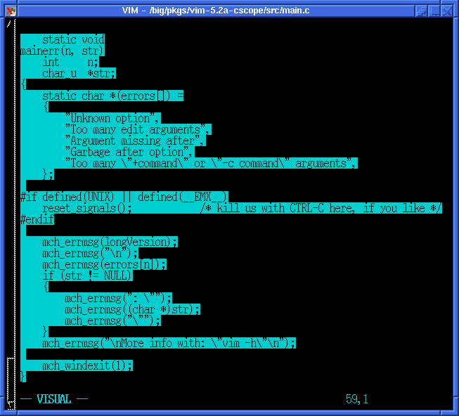
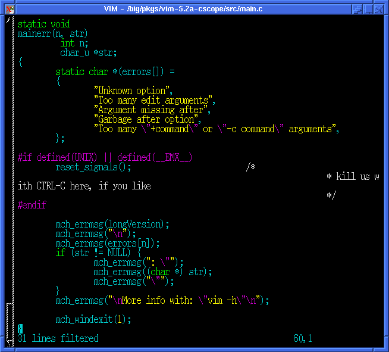

"Linux Gazette...making Linux just a little more fun!"
Revisiting VIM
by Andy Kahn
April 29th, 1998
Vim stands for "VI Improved", and certainly,
it a very much improved version of the old text editor, vi. It's been a
while since the gazette had an article on vim (over a year to be exact!),
and a lot has changed since then, including a major version release. I
decided to cover some of the new features (as well as some older features)
that I find extremely useful in vim, but not in vi.
Features
First of all, let me just run down some of
the big features of the latest version of vim:
Syntax highlighting
Win32 GUI version
BeOS version, including GUI
MacOS GUI version
VMS version
Built-in scripting language
Perl and Python support
Unlimited undo
Multiple windows
...and a ton of other good stuff
Syntax highlighting
Personally, I found the syntax highlighting
to be one of the most useful features of vim. Syntax highlighting (or coloring,
as some may call it), colors text according to their attributes. For editing
code, this allows you to have different colors for commented text, keywords,
numbers, etc. You may not think much of it, but believe me, after staring
at code for long periods of time, all the text on the screen starts looking
pretty much the same. It certainly helps to have some color differentiate
between actual code, and comments in the code! A picture is worth a thousand
words, so here's a screen shot of my vim setup editing main.c from the
vim source:

You may notice the curious string on the
very first line of the file: "vi:set ts=8 sts=4 sw=4:"
This is just a little formatting shortcut. If you write code that other
people may look at and/or edit, if they also use vim, then the code will
be properly indented as you intended it to be! This is just like the magic
strings people use in emacs: "-*- Mode: C++; tab-width: 4; indent-tabs-mode:
nil; c-basic-offset: 4 -*-" to make indentation
look consistent.
Gui versions
As for all the wonderful GUI versions of vim,
here's a screenshot I found at http://polder.ubc.kun.nl/~rhialto/be/vim-5.0s-screen1.gif
showing off the BeOS version:

Here is a BIG screenshot of the Unix version
of vim with four different looks (vim in an xterm, vim using Athena, vim
using Athena with Xaw3d, and vim using Motif (for Linux users, Vim also
works with Lesstif)). Click on the image for the full size version:

There are plenty more screenshots here.
Built-in Scripting
The built-in scripting language is a small
language (as opposed to Perl and Python) that let's you do some simple
things in your vim startup file (.exrc or rather, .vimrc). For example,
the simplest thing to do is to check for a version or feature:
if version >= 500
" Switch on syntax highlighting.
syntax on
if has("cscope")
set csexec=/usr/local/bin/cscope
set csto=0
set csta=1
set csverb=0
cs add cscope.out
set csverb=1
else
map ^] g^]
endif
endif
Visual Text Selecting
A feature which is present even in the previous
version of vim that I use frequently is its "Visual" capability. By hitting
"v" when in command mode, you can highly lines and words and then perform
just about any normal vim operation on the selected text! This includes,
deleting, copying, pasting, running more ":ex" commands, and my favorite,
reindenting. For example, let's say I highlighted the following code:

If I hit ">" (that's the greater-than sign,
or Shift-.), the result will look like this:

Or if I were to hit "<" (the less-than
sign, or Shift-,), I get this result:

If I really wanted to, I could highlight
the entire function, and run then run it through the "indent" program:
Before:
After:

C and C++ tags
Another feature programmers will find handy
is vim's ability to deal with multiple tags. Vim comes with "Exhuberant
Ctags", and with it, you can store multiple definitions in the same tags
file. Once in vim, you can do use ":tselect" or ":tjump" on a tag, and
vim will present to you a list of the multiple tag entries. Just select
from the list, and vim will take you there as it normally would with a
single tag entry!
There's More!
Of course, I could go on and on about all
the little (as well as big!) things that make vim such a great editor.
But I won't bore you with the details. :) You can go read
about them yourself on vim's homepage: www.vim.org.
There's plenty of new things being worked on and added all the time, including
more features in the various GUI versions (contact me if you are interested
in doing a GTK and/or a QT version!), ports to other platforms (including
the Amiga), and other nifty features.
There are certainly a lot of text editors
out there, and if you're a vi user, you should definitely consider using
vim if you aren't doing so already!
Andy works at Digital Equipment Corporation doing
Digital Unix filesystems kernel development.
He thinks he's just hacking away at more and more C code,
and in his copious spare time, he hacks on lots of other
things, including all the trees in his neighborhood.
Feel free to send him
email.
Copyright © 1998, Andy Kahn
Published in Issue 29 of Linux Gazette, June 1998
![[ TABLE OF CONTENTS ]](../gx/indexnew.gif)
![[ FRONT PAGE ]](../gx/homenew.gif)